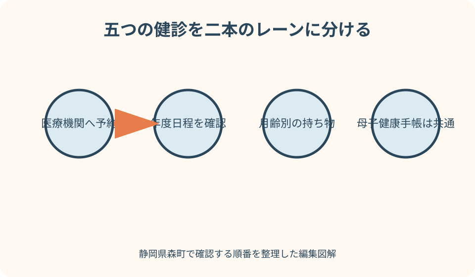
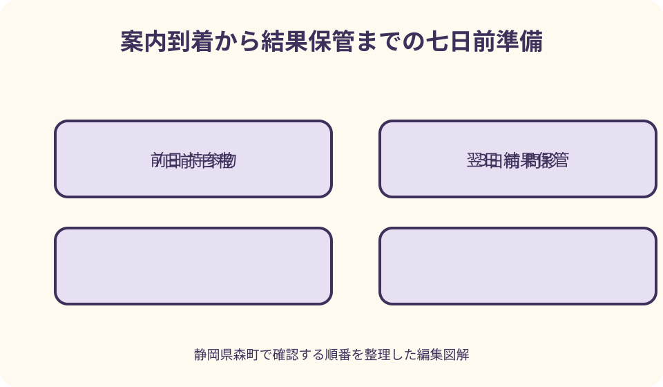

妊娠・子育て手続｜最終確認 2026-08-10
静岡県森町の乳幼児健診準備｜日程・問診票・持ち物・欠席時の連絡
森町の乳幼児健診は、1か月・4か月・10か月を医療機関で受け、1歳6か月・3歳を保健福祉センターで受ける構成です。案内が届いたら、子どもの生年月日と対象健診、個別か集団か、予約・受付時刻、問診票、持参物を一つずつ照合します。問診は正解を選ぶ試験ではなく、家庭での様子や保護者の心配を専門職へ渡す資料です。発熱など受診前に気になる状態がある場合は、当日会場へ直接行く前に連絡します。

編集イラスト最初に結論：案内・日程・問診・持ち物を四つに分ける
乳幼児健診の案内が届いたら、封筒を『行けば終わる通知』として扱わず、子どもの生年月日、健診名、場所、日時を最初に確認します。兄弟姉妹の案内と取り違えないよう宛名も見ます。
次に、その健診が医療機関で受ける個別健診か、森町保健福祉センターで受ける集団健診かを確認します。予約方法と受付時刻が異なるためです。
問診票やアンケートは、当日の朝に急いで埋めるより、数日前から子どもの普段の様子を見て記入します。分からない項目は推測せず、相談したい印を付けます。
持参物は健診ごとに違います。母子健康手帳だけでよいと思わず、受診票、健康保険情報、医療費受給者証、歯ブラシ、尿など、町の現行案内を一件ずつ照合します。
森町の健診は個別と集団に分かれる
森町公式は、1か月児、4か月児、10か月児の健康診査を医療機関で実施すると案内しています。受診票を用意し、対象期間内に対応医療機関へ予約します。
1歳6か月児と3歳児の健康診査は、森町保健福祉センターで実施されます。対象日は年度ごとの森町こども保健ガイドで確認します。
個別健診は対象期間内で予約する方式、集団健診は生まれ月ごとに指定日が示される方式です。同じ『乳幼児健診』でも、案内を読み替えないようにします。
6か月児、1歳児、2歳児には健康相談もあります。健康診査と相談は名称や内容が違うため、届いた案内の事業名を家族の予定表へ正確に写します。
1か月児健康診査の準備
森町の1か月児健康診査は、生後27日から生後6週未満が対象です。出生手続後に保健福祉センターで受診票を交付すると町が案内しています。
持ち物は母子健康手帳、1か月児健康診査受診票、子どもの健康保険情報が分かる物、こども医療費受給者証です。保険や受給者証が手続中なら予約先と町へ相談します。
内容は身体測定、問診、内科健診、保健指導です。出産施設での別の診察や赤ちゃん訪問を受けたから不要、と家庭だけで判断しないでください。
対象期間が短いため、出生後早めに受診票と予約を確認します。入院中、里帰り中、転入直後など通常日程が難しい場合は、医療機関と健康こども課へ連絡します。
4か月・10か月児健康診査の準備
4か月児健康診査は、おおむね4か月から6か月未満を対象として医療機関で行われます。森町乳幼児健診・相談つづり内の4か月児健康診査受診票を使います。
10か月児健康診査は、おおむね10か月から12か月未満が対象です。同じつづり内の10か月児健康診査受診票を使い、医療機関へ予約します。
どちらも母子健康手帳、該当受診票、健康保険情報が分かる物、こども医療費受給者証が町公式の持ち物です。受診票を別の月齢と取り違えないようにします。
おおむねという表示だけで期限を自己設定せず、受診票と予約先へ対象期間を確認します。予約が混み合う可能性を考え、期間の終わり近くまで待たないようにします。
1歳6か月児健康診査の準備
1歳6か月児健康診査は保健福祉センターで行う節目の健診です。実施日は森町こども保健ガイドの生まれ月別日程を確認します。
町公式の内容は、身体計測、内科・歯科健診、歯科指導、フッ素塗布、栄養指導、保健指導です。子どもの様子により進行が前後することがあります。
持ち物は母子健康手帳、歯科問診票、アンケート、歯ブラシ、口拭きタオル、バスタオル、子どもノートです。年度の案内に変更がないかも確認します。
子どもの普段の言葉、動き、食事、睡眠、歯みがきなどを数日前からメモします。できる・できないを合否のように評価せず、家庭での様子を具体的に伝えます。
3歳児健康診査の準備
3歳児健康診査も保健福祉センターで行われます。森町は幼児期最後の健診として、身体計測、内科・歯科健診、栄養・保健指導等を案内しています。
3歳児健診には尿検査、視力検査、聴力検査が含まれます。家庭で事前に行う確認や採尿について、郵送物と案内を早めに読みます。
3歳児では、母子健康手帳、歯科問診票、アンケート、歯ブラシ、口拭きタオル、尿、バスタオル、子どもノートを持参します。採尿容器は事前郵送と町公式に記載されています。
採尿できなかった、家庭での視力・聴力確認が難しかった場合は、未実施のまま放置せず当日の受付へ伝えます。結果を推測して問診票へ書かないようにします。

年度のこども保健ガイドで日程を確定する
集団健診の日程は年度ごとに変わります。古い案内や兄弟姉妹のときの予定を使わず、受診する年度の森町こども保健ガイドを開きます。
確認するのは、事業名、対象となる生年月、実施日、受付時間、会場、持ち物です。一つでも案内通知と違う場合は健康こども課へ問い合わせます。
案内をスマートフォンのカレンダーへ入れるときは、開始時刻ではなく受付時間を書きます。移動、駐車、着替え、きょうだいの預け先も予定に含めます。
公式PDFを保存する場合は年度をファイル名へ付けます。翌年度に同じ曜日や月だと思い込まず、更新されたページを再確認します。
問診票は普段の姿を書く
こども家庭庁の母子健康手帳情報支援サイトは、専門職が問診票や母子健康手帳の記録を参考に、身体発育、栄養、発達等を確認すると説明しています。
できた日を正確に覚えていない場合は、おおよその時期や分からないことをそのまま書きます。健診に通るために回答を良く見せる必要はありません。
家庭と保育施設で様子が違うなら、両方を書きます。保育者から聞いた内容は、誰がいつ見たか分かるよう短くメモします。
問診票だけでは説明しにくい心配は、別紙に具体例を書きます。いつ、どこで、どの程度、何をすると変わるかを伝えると相談しやすくなります。
歯科問診票と歯みがきの記録
1歳6か月児と3歳児健診では歯科問診票を使います。歯の本数を正確に数えられなくても、仕上げみがき、飲食、気になる痛みや変色などを分かる範囲で記します。
歯ブラシと口拭きタオルを持参します。使用中の歯ブラシを洗って乾かし、子どもの名前が分かる袋へ入れます。
フッ素塗布が町公式の内容に含まれますが、当日の実施可否や注意事項は会場で確認します。家庭の情報だけで効果や適否を断定しません。
歯や口の痛み、腫れなど受診が必要と思う症状がある場合は、集団健診まで待つのではなく歯科医療機関へ相談します。
母子健康手帳と成長記録を整える
母子健康手帳には、過去の健診、予防接種、身体計測、発達の記録があります。付箋で今回見てほしいページを示し、原本を持参します。
自宅で測った身長・体重は、測定日と方法を一緒に記します。家庭用機器と健診会場では条件が違うため、小さな差だけで増減を判断しません。
睡眠、食事、排せつ、遊び、ことば、対人場面など、生活の中で気になる出来事を一週間程度メモします。毎日完全に記録する必要はありません。
動画や写真を見せたい場合は、会場で確認できるか事前に尋ねます。子どもや家族の個人情報が含まれるため、公開設定や他人の映り込みに注意します。
持参物を月齢別に仕分ける
全健診で共通しやすい母子健康手帳を中央に置き、個別健診には受診票、健康保険情報、こども医療費受給者証を組み合わせます。
集団健診にはアンケートや歯科問診票、子どもノート、バスタオルなどを加えます。3歳児は尿、1歳6か月・3歳は歯ブラシと口拭きタオルを確認します。
当日の子どもの着替え、おむつ、飲み物など生活用品と、町が指定する持参物を別の欄にします。必要以上の荷物で書類が埋もれないようにします。
受診票や問診票には、記入者欄、日付、未記入箇所がないか前日に確認します。分からない欄は空欄の理由を受付へ伝えます。
当日の服装と会場での動き
身体計測や診察があるため、脱ぎ着しやすい服装を選びます。会場の室温や待ち時間に備え、調整しやすい重ね着にします。
受付時間に遅れそうな場合は、会場へ向かいながら判断せず健康こども課へ電話します。遅れても必ず受けられる、または受けられないと決めつけません。
きょうだいを連れて行く、通訳や支援者が同席するなど事情がある場合は事前に相談します。会場の安全と進行に必要な案内を受けます。
子どもが眠い、泣く、普段どおりにできないことはあります。一回の場面だけで家庭が結果を評価せず、普段の様子を問診で補います。
欠席・日程変更は事前に連絡する
指定日に行けないと分かったら、健康こども課こども家庭係へ早めに連絡します。無断欠席にせず、次に受けられる日や別の方法を確認します。
子どもや家族の体調不良、交通、仕事、きょうだいの予定など理由は家庭ごとに異なります。詳細を話しにくくても欠席と折り返し可能な時間を伝えます。
別日が対象年齢の範囲を越える可能性がある場合は、その点を明示します。1歳6か月・3歳の健診は法律上の年齢範囲もあるため町が個別に調整します。
医療機関で受ける個別健診をキャンセルした場合は、医療機関と町の双方へ必要な連絡を確認します。受診票の期限と再予約を一緒に管理します。

森町へ転入した家庭の確認
転入後に乳幼児健診の案内が届かない場合は、対象外と判断せず健康こども課へ連絡します。子どもの生年月日、転入日、前自治体で受けた健診を伝えます。
前自治体の受診票が残っていても、森町の医療機関でそのまま使えるとは限りません。母子健康手帳と未使用券を示し、森町の受診票や日程を確認します。
すでに同じ月齢の健診を受けた場合は、受診日と結果を母子健康手帳で確認します。森町で再度受けるかを家庭で決めず、町へ相談します。
転入時期が集団健診の指定日直前なら、郵送を待たず電話します。住所、連絡先、案内の送付先も正しく登録されているか確認します。
案内が届かない・紛失した場合
同じ生まれ月の家庭に案内が届いたと聞いても、比較だけで未着と決めません。年度ガイドで対象を確認し、健康こども課へ問い合わせます。
案内や受診票を紛失した場合は、健診名、子どもの生年月日、予約日を伝えます。印刷したページやコピーで代用できると自己判断しません。
転送届を出している、住民票と居所が違うなど郵便事情がある場合は、町が使う住所と連絡方法を確認します。個人情報を含む郵送物の送付先を家族だけで変更しません。
再交付や再送を受けたら、古い案内が後から見つかった場合の処分方法を確認します。二枚を同時に提出しないよう最新版を一つに決めます。
健診前に気になる症状があるとき
乳幼児健診は定期的な発育・発達の確認で、急な病気の診療を目的とする場ではありません。発熱や嘔吐、けがなど気になる症状があれば、当日まで待たず医療機関へ相談します。
集団会場へ来てよいか迷う状態なら、出発前に健康こども課へ連絡します。感染症の可能性や会場での対応を家庭だけで判断しません。
静岡こども救急電話相談#8000は、急な発熱やけが等で受診を迷うとき、看護師や小児科医から助言を受けられる県の窓口です。2026年8月確認時点で24時間案内されています。
明らかに重症の場合は119番を利用するよう県が案内しています。健診の問診票や予約変更より、赤ちゃん・子どもの安全を優先します。
結果は合否ではなく次の確認材料
乳幼児健診では、身体発育、栄養、発達、歯科、生活習慣などを複数の専門職が確認します。一つの数値や一場面だけで子どもの将来を決めるものではありません。
追加の相談や医療機関受診を案内された場合は、理由、連絡先、期限、必要資料を聞きます。案内を受けたこと自体を診断確定と受け取らないようにします。
母子健康手帳へ結果を記録し、別紙の結果や紹介状があれば同じ場所に保管します。保育施設へ共有する範囲は、本人情報の扱いを考えて決めます。
納得できない、説明を思い出せない場合は健康こども課や受診先へ再確認します。インターネット上の発達表だけで結果を上書きしません。
健診後のこども健康相談
森町のこども健康相談は、3歳未満の子どもについて、発育・発達、授乳、離乳食、保護者自身のことなどを相談できる予約制の機会です。
健診当日に話し切れなかった、しばらく様子を記録してから相談したい場合は、健康こども課へ予約方法を尋ねます。
持ち物として母子健康手帳、バスタオル、子どもノートが案内されています。身体測定だけを希望する場合も事前に相談します。
健康相談も急病診療ではありません。新たな症状が出た、状態が変化した場合は、予約日まで待つかを医療機関へ確認します。
乳幼児健診の良い点
良い点は、家庭で毎日見ている保護者の記録と、医師、歯科医師、保健師、栄養士等の視点を一度に重ねられることです。
身体計測だけでなく、食事、歯、ことば、遊び、睡眠、家族の困り事まで相談できます。質問が小さいかどうかを保護者が選別する必要はありません。
過去の母子健康手帳と今回の問診を比べることで、単日の様子ではなく成長の経過を共有できます。転居や医療機関変更の際にも記録が役立ちます。
必要に応じて次の相談や受診へつながる点も利点です。追加確認は『不合格』ではなく、その子と家庭に合う支援を考える段階です。
町の案内へ注文したい点
注文したい点は、乳児期の医療機関健診と幼児期の集団健診が複数ページ・PDFに分かれ、初めての家庭には全体像がつかみにくいことです。
健診名ごとに、対象期間、予約先、会場、持ち物、欠席連絡、転入時の手続を一表にしたページがあれば、取り違えを減らせます。
3歳児の家庭での視力・聴力確認、採尿ができなかった場合の対応も、案内時に分かりやすく示されると準備しやすくなります。
集団健診へ行く前の体調確認と、延期・医療相談の連絡先も同じ画面にあると安全です。現在は迷った段階で健康こども課へ電話します。
予定どおり行けないときの代案・結論
代案・結論として、指定日へ行けない場合は欠席だけを伝えるのではなく、次の健診日、別会場・個別対応の有無、受診票の期限を尋ねます。
問診票をなくした、未記入項目がある場合も無断欠席せず連絡します。再交付方法と、当日相談できる項目を確認します。
転入直後で過去の記録がそろわない場合は、母子健康手帳と分かる範囲の受診歴を持参します。前自治体への照会が必要か町へ相談します。
子どもの体調が悪い場合は、健診の実施可否を町へ、症状の相談を医療機関等へ分けます。延期するだけで医療相談まで終えたことにしません。
大石の視点：封筒を家族の段取り表へ変える
大石の視点では、健診案内の価値は日付を知らせるだけではありません。家族が送迎、問診、持ち物、きょうだい対応を分担するための段取り表になります。
森町の山間部から保健福祉センターや医療機関へ向かう場合は、受付時間だけでなく往復時間、駐車、食事、昼寝を予定へ入れます。
主に子どもを見る人だけが問診を書くと、家庭の別の場面が抜けることがあります。家族や保育者の観察を短く集め、最後は保護者が内容を確認します。
転居を伴う家庭は、鍵渡し日ではなく転入日と健診日を並べます。前自治体の券と森町の日程が重なるときは、双方へ早めに確認します。
図解案1：五つの健診を二本のレーンに分ける
一つ目の図解は、1か月、4か月、10か月を青い医療機関レーン、1歳6か月、3歳を緑の保健福祉センターレーンに置きます。
青レーンには対象期間、予約、受診票、健康保険情報、受給者証を並べます。緑レーンには年度日程、受付時間、アンケート、歯科用品を並べます。
3歳の位置だけ、尿、家庭での視力・聴力確認を追加します。持ち物が月齢で変わることを色とアイコンで示します。
両レーンの下に母子健康手帳と成長記録を共通線として引きます。欠席・転入は健康こども課へ戻る分岐にします。
図解案2：案内到着から結果保管までの七日前準備
二つ目の図解は、7日前、3日前、前日、当日、翌日の五場面で構成します。7日前に対象日と会場、予約を確認します。
3日前に問診票を書き始め、成長、食事、睡眠、ことば、歯、保護者の心配を集めます。分からない欄へ質問印を付けます。
前日は月齢別持ち物を袋へ入れ、子どもの体調と会場までの経路を確認します。当日は受付で未記入や気になる症状を伝えます。
翌日は母子健康手帳と結果を保管し、次の相談・受診を予定へ入れます。急な症状の赤線は全日程を飛び越えて医療機関へつなぎます。
家族で読む最終チェックリスト
案内欄では、子どもの氏名、生年月日、健診名、対象期間、生まれ月別日程を確認します。兄弟姉妹の通知とは別のクリアファイルに入れます。
日程欄では、医療機関の予約または集団健診の受付時刻、会場、移動、同席者、欠席連絡先を書きます。
書類欄では、母子健康手帳、受診票、アンケート、歯科問診票、子どもノートを確認します。月齢に応じて健康保険情報、受給者証、尿、歯ブラシ等を加えます。
相談欄では、家庭で気になること、保育施設での様子、受診中の医療機関、服薬、保護者の困り事を記します。診断名を推測して書く必要はありません。
まとめ：案内を受け取った日に三つ確認する
第一に、対象の子ども、健診名、日付、会場を確認します。医療機関の個別健診か保健福祉センターの集団健診かを分けます。
第二に、森町乳幼児健診・相談つづり、母子健康手帳、年度ガイドを一か所へ集め、問診と成長記録を数日前から準備します。
第三に、欠席、転入、案内未着、体調不良がある場合は健康こども課へ連絡します。症状の相談は健診日を待たず医療機関等へ行います。
本記事は2026年8月10日に森町と国の一次情報を照合しました。受診日程と持ち物は年度ごとに変わり得るため、届いた案内と最新の町公式ページを優先してください。
公式情報・確認先
掲載内容は次の一次情報を基礎に整理しました。営業、料金、催し、交通は変わるため、出発前または手続き前にリンク先で最新情報を確認してください。
- 乳幼児の健診・相談（静岡県森町、2026-08-10確認）
- 育児（静岡県森町、2026-08-10確認）
- 2026年度森町こども保健ガイド（静岡県森町、2026-08-10確認）
- 乳幼児健診について（こども家庭庁 母子健康手帳情報支援サイト、2026-08-10確認）
- 標準的な乳幼児期の健康診査と保健指導に関する手引き（こども家庭庁、2026-08-10確認）
- 母子保健法（厚生労働省、2026-08-10確認）
- 母子保健法施行規則（厚生労働省、2026-08-10確認）
- 静岡こども救急電話相談（#8000番）（静岡県、2026-08-10確認）